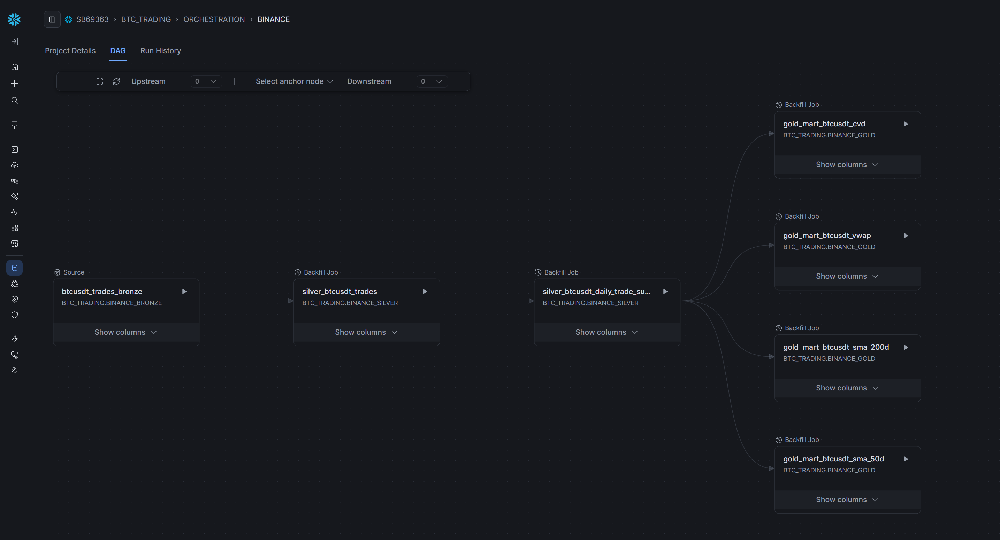
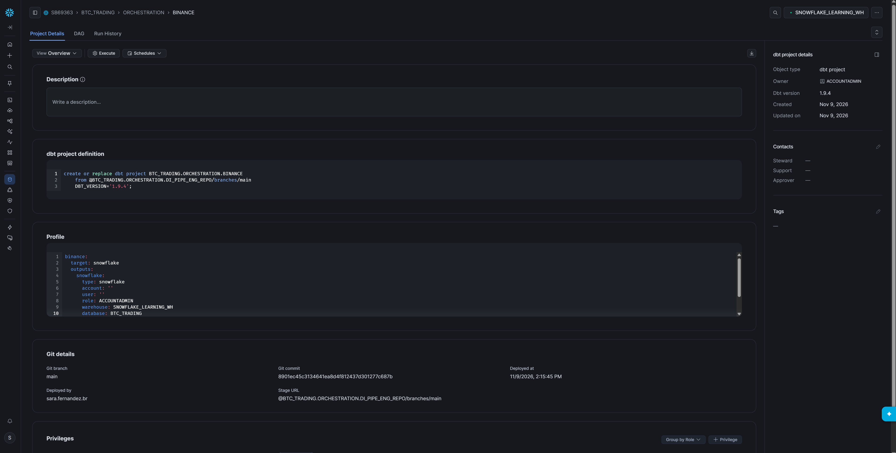
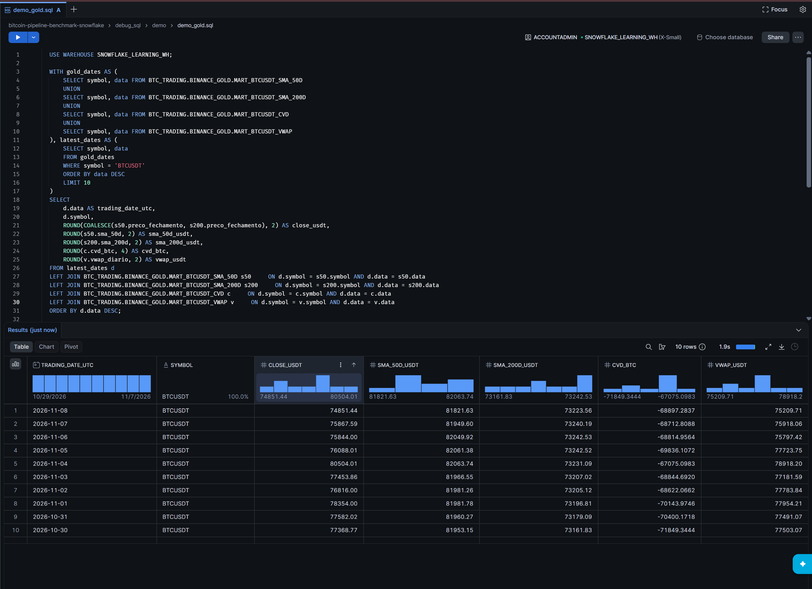
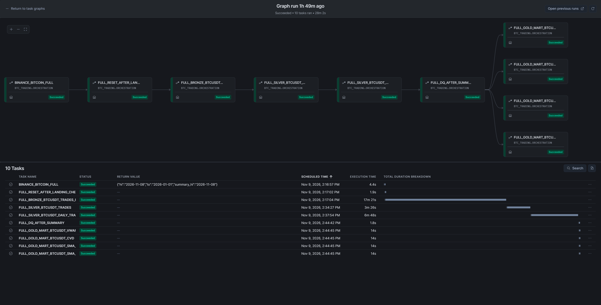
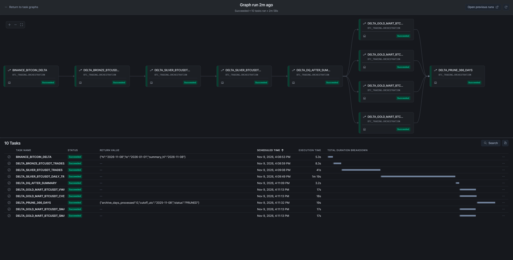
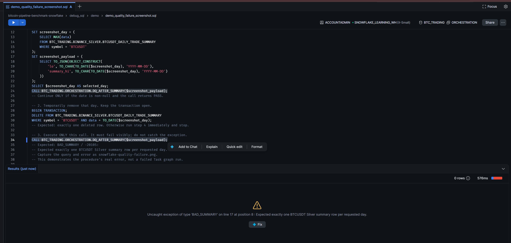
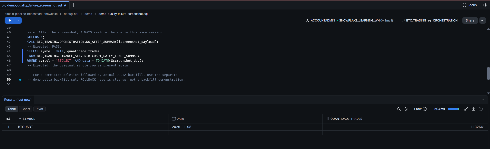
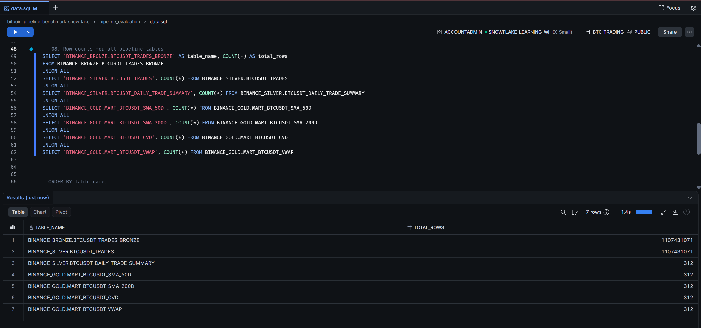

Daily Bitcoin analytics with Snowflake and dbt.
The platform transforms Binance Spot trade archives into typed trade records, daily summaries and four analytical products. The implementation combines SQL and dbt models, Snowflake Tasks, daily coverage checks and incremental processing.
A shared daily summary reduces repeated aggregation.
Bronze preserves raw values and file provenance. Silver converts types and aggregates trades by UTC date. The four Gold models read the daily summary, avoiding a separate trade-level aggregation for each indicator. Incremental summary selection still scans Silver trades to compare daily counts; this design does not imply constant-cost updates.

View evidence: Model dependencies in dbt

Silver and Gold transformations are implemented with dbt.
The platform uses dbt SQL models to build typed Silver records, daily summaries and four Gold marts. Snowflake Tasks orchestrate Bronze ingestion, dbt builds, summary coverage checks and retention. Model dependencies are declared with source() and ref(); operational sequencing is defined in the task graphs.
| Deployment detail | Evidence from the supplied screenshot |
|---|---|
| dbt project | BTC_TRADING.ORCHESTRATION.BINANCE |
| dbt version | 1.9.4 |
| Git source | DI_PIPE_ENG_REPO/branches/main |
| Profile / target | binance / snowflake |
| Warehouse | SNOWFLAKE_LEARNING_WH |
View evidence: dbt deployed in Snowflake

The screenshot documents the dbt deployment configuration. Model behavior is documented from the repository; successful runs are verified separately in task and dbt run history.
Explore the dbt implementation →Explicit grain and bounded recalculation.
Silver trades retain the intended grain of one exchange execution. The summary and Gold marts use (symbol, data) as their logical key. These keys describe the model contract; they do not guarantee uniqueness in stored data.
Explore fields and formulas →| Product | What it calculates | Impact of a change on D |
|---|---|---|
| SMA50 | 50 calendar days of closing prices | D → D+49 |
| SMA200 | 200 calendar days of closing prices | D → D+199 |
| CVD | Cumulative buyer − seller aggression, in BTC | D onward |
| VWAP | Daily USDT volume / BTC volume | D only |
Incomplete SMA windows return NULL. Zero BTC volume returns NULL VWAP. Trade identity is logical; the current append model does not enforce trade-key uniqueness.
View evidence: Gold products · ten-date preview

Daily coverage is checked before Gold builds run.
Validate the landing interval
Both task roots validate matching archive names, dates, duplicate days and gaps between the discovered landing endpoints. FULL runs this check before resetting its configured tables. Missing intended endpoints require an independently defined expected interval.
Build the daily summary
The summary model selects missing dates and dates whose trade count differs from the stored count. Corrections that preserve the count are not detected by this rule.
Gate the four marts
The post-summary procedure requires exactly one BTCUSDT row per expected day. FULL checks the landing interval; DELTA checks through yesterday UTC. A failure blocks dependent Gold tasks. Existing Gold tables remain queryable with their previously stored values.
It does not reconcile trade counts or validate every price and quantity. Landing bounds are discovered from files, so missing endpoints need an independent expected scope to be detected.
The graph is not an atomic publication boundary. Bronze or Silver writes may already be committed when a gate fails, and a failed FULL can leave tables at different refresh states. Successful task execution must be distinguished from complete data reconciliation.
Inspect the implemented checks and limitations →
View evidence: FULL graph · successful run

View evidence: DELTA graph · successful run

View evidence: Missing-day quality check

Missing summaries can be rebuilt from retained trades.
The DELTA model can reconstruct absent daily summaries from Silver trades and propagate changed inputs to Gold. A dedicated backfill graph is not required for this repair. The recovery scope is limited by source availability, file-level ingestion state and the summary change-detection rule.
Open the recovery runbook →Establish a recoverable baseline
Check source trades, landing coverage and retention. Preserve the summary row before a controlled deletion.
Show the failure before repair
Call DQ directly after deletion to capture BAD_SUMMARY. DELTA can repair the row before its own quality gate.
Run DELTA and verify descendants
Wait for the full graph, inspect the restored summary and all Gold tasks. DELTA also processes new files and runs retention.
View evidence: Demo cleanup · row restored

Archive ingestion has an explicit manual boundary.
Local Python downloads Binance daily archives, extracts CSV and converts it to Parquet. Files are uploaded to the internal stage before a manual FULL or DELTA run. Snowflake handles subsequent COPY ingestion and SQL/dbt transformation. End-to-end ingestion is not scheduled or automated in this implementation.

A historical reference FULL transformation took 31 min 22 s and used 0.704936 attributed credits. Those measurements belong to the earlier report snapshot, not the newer screenshots. Local preparation, upload and warehouse idle time are excluded; no production throughput or cost target has been validated.
Read execution evidence and measurement limits →View evidence: Observed table counts

Operational boundaries and next steps.
Design decisions and trade-offs
| Decision | Benefit | Limit |
|---|---|---|
| Daily summary before Gold | Reuses one aggregate across four indicators. | Summary correctness becomes a shared dependency. |
| File-based incremental ingestion | Avoids reprocessing recognized files during routine runs. | Same-name replacements and partial file deletions need explicit repair. |
| Count-based summary selection | Detects missing summaries and changed daily counts. | Equal-count corrections and trade-level duplicates can be missed. |
| Separate FULL and DELTA graphs | Distinguishes rebuilds from routine processing. | Partial failures require state-aware recovery; writes are not atomic across the graph. |

Retention changes rebuild semantics
DELTA prunes dates strictly before UTC today minus 366 days only after all four marts succeed. Stage removals cannot roll back with table deletes. A later FULL needs retained lookback for SMA windows and an explicit CVD baseline to preserve continuity.
Production controls remain to be implemented
The prototype uses an administrative role. Least-privilege deployment, scheduled ingestion, freshness alerts, stronger field and value checks, and tested recovery objectives remain future work. The repository does not demonstrate production readiness.
Implementation notes and operating procedures.
Documentation covers setup, model contracts, quality gates, recovery and retention. Source code defines the implemented behavior; screenshots document specific observations rather than continuous operational guarantees.